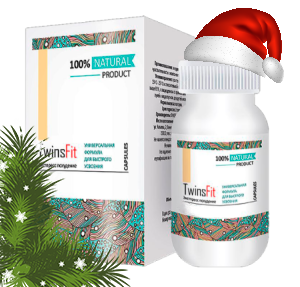
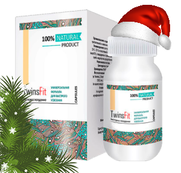

Революционный способ похудения
на основе кетогенной диеты
Подари своему телу
новую фигуру
Борется с самым
«вредным» жиром
– висцеральным
До 10 кг
похудения в месяц без диет и нагрузок
Мировой хит
в области диетологии
Кетогенная диета
– единственная диета, с помощью которой худеют все!
Жир уходит
с таких мест, как:
Живот
Ягодицы
Талия
Ноги
Плечи
Руки
Лицо
Шея
Как быстро?
Данные основанные на клинических исследованиях
7-10 кг
в месяц
5-7 кг
в месяц
Менее 5 кг
в месяц
Более 10 кг в
месяц
Посмотрите результаты
похудения наших покупательниц с TwinsFIt
Основное преимущество TwinsFIt –
вес уходит сам по себе
при регулярном приеме натурального комплекса. TwinsFIt безопасно активизирует естественные процессы жиросжигания в организме человека.
Многие из тех, кто похудел с помощью TwinsFIt,
не могли похудеть годами!
Ведущие диетологи мира уже назвали TwinsFIt спасением человечества от лишнего веса. Сейчас на него возлагаются самые большие надежды, и комплекс уже вошел в
Государственные программы по похудению
в таких странах, как США, Канада, Франция, Дания. Это не обычный БАД, а настоящее лекарство от лишнего веса!
Принцип действия основан на возможностях нашего организма получать энергию не только из углеводов, но и из жира.
Когда мы перестаем потреблять углеводы и вместо них начинаем есть много жира, наш метаболизм перестраивается.
В печени вырабатываются специальные вещества – кетоновые тела,
предназначенные для расщепления жира. Это основа кетогенной диеты.
Однако ученые из института диетологии пошли дальше, создав специальный препарат, содержащий
природные вещества, по действиям аналогичные кетоновым телам.
Они также направлены на сжигание жира.
Растительные кетоновые тела
– основа TwinsFIt, поэтому с помощью этого комплекса худеют все!
Эти вещества добываются из натуральных растительных компонентов, поэтому не вредят организму и к тому же обладают чрезвычайно высокой эффективностью (по которой превосходят собственные кетоновые тела человека более чем в 15 раз!).
Клинические исследования показали,
что при их приеме вес начинает уходить стремительно и со 100% эффективностью.
Стимулирует активное очищение и детокс на клеточном уровне
Нормализует водно-солевой баланс и избавляет от отеков
Что входит в состав
комплекса TwinsFIt
С TwinsFIt вы похудеете быстро, гарантированно и безопасно!
Экстракт артишока
Основу препарата TwinsFIt составляет артишок. Действует без нагрузки на печень и почки, так как при взаимодействии с жиром распадается и утилизируется сам.
Полезное действие экстракта было открыто учеными в 2012 году. Уже тогда стало понятным, что они совершит революцию в диетологии!
Гуарана
Содержит в высокой концентрации бета-гидроксимасляную кислоту (BHB). Эта кислота аналогична по действиям кетоновым телам, вырабатываемым организмом человека, но в 15 раз сильнее. Направлена на ускоренное сжигание жировых отложений.
Экстракт селеры
Содержит в большом количестве L-карнитин. L-карнитин – это аминокислота, которая контролирует клеточный метаболизм путем получения энергии из жирных кислот. Способствует активному жиросжиганию. Борется с висцеральным жиром.
Экстракт грейпфута
Содержит самый известный стимулятор андренорецепторов и ускоритель обменных процессов – синефрин. Данное вещество способно проникать внутрь жировых клеток и разрушать их изнутри. При одновременном использовании синефрина с другими жиросжигателями, эффективность последних повышается в 3-4 раза.
Витаминно-минеральный комплекс
Дополнительно в состав TwinsFIt входит более 30 витаминов, макро- и микроэлементов для поддержки организма во время похудения. Витамин А, витамины В1-В6, витамин В12, витамин С, витамин D, магний, кальций, цинк, марганец и др.
TwinsFIt – самое комфортное похудение
Без голода
Без ограничений в питании
Без физических упражнений
Без вреда для здоровья
Экспертное мнение
диетологов
Ричард Грут, известный американский диетолог, стаж практики – более 30 лет
«Безусловно, TwinsFIt лучший способ похудения на сегодняшний день. Его основное преимущество заключается в том, что это очень простой способ. Достаточно лишь принимать TwinsFIt 1-2 раза в день, чтобы уже через несколько дней увидеть, как уходят накопившиеся килограммы. Причем с пользой для здоровья.
Именно TwinsFIt я рекомендую в последнее всем своим пациентам, и отзывы о таком похудении самые положительные. Комплекс помогает всем! Если вы не пробовали TwinsFIt, советую это сделать как можно раньше. TwinsFIt способен вас приятно удивить»
Отзывы тех,
кто уже попробовал
Марина,
29 лет,
«Препарат супер!!! Никогда я так не худела, как с ним. Просто и быстро. Похудела на 18 кг. Мучилась от лишнего веса больше 10 лет, что только не пробовала. Некоторые диеты помогали, но вес потом опять возвращался. Из всех способов похудения TwinsFIt самый эффективный. Причем разница в разы! Посоветовала TwinsFIt еще своей подруге. Она тоже с помощью него скинула почти 24 кг! Он помогает всем»
Людмила,
55 лет,
«Мне 55 лет. Полнотой страдаю с 41 года. В самые худшие периоды вес составлял 117 кг. В последний год стало сильно подводить здоровье. Врач сказал, что нужно срочно худеть, а то ни сердце уже не выдерживает, ни суставы. Выписал TwinsFIt. Если честно не очень верила, что этот препарат мне поможет. Но в итоге я скинула почти 30 кг. Принимала TwinsFIt 3 месяца. Сейчас здоровье у меня окрепло. TwinsFIt очень хороший препарат»
Кристина,
34 года,
«Понравилось худеть с TwinsFIt тем, что ничего делать не нужно. Просто принимаешь капсулы и худеешь. Каких-либо негативных действий на организм не обнаружила. Наоборот, появилось масса энергии, стала лучше высыпаться, улучшилась кожа, пропали прыщики, которые до этого меня донимали, пропал целлюлит! Похудела за 1 месяц на 11 кг. Понравилось все. Буду принимать TwinsFIt и дальше. Советую всем»
Простое использование
TwinsFIt
Вес начнет уменьшаться уже через 2-3 дня после начала курса

 
